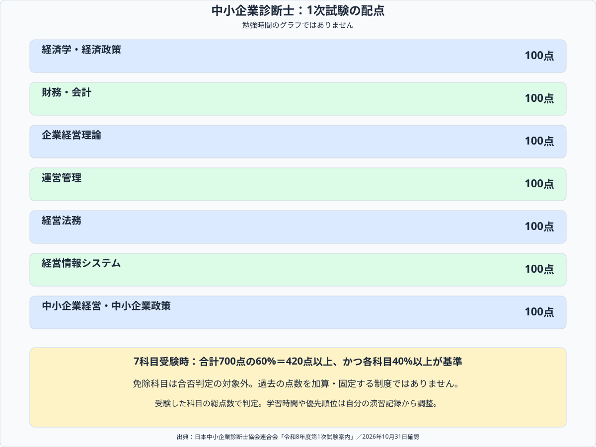

中小企業診断士 独学合格ガイド【2026年版】勉強時間・テキスト選び
こんにちは、若葉です！
「最強のビジネススキルを身につけよう！」と中小企業診断士のテキストを開いた瞬間……「うわっ、なんじゃこりゃ……経済学に財務、法文にITまで、7科目も範囲広すぎて頭爆発するわ！どれから勉強すればいいの！？」とフリーズしていませんか？（お気持ち、めちゃくちゃ分かります笑）
私は会計分野の学習を経験しましたが、診断士で出題される財務・会計や2次記述式では、解いた後に根拠や時間配分を記録して見直すことが大切です。
この記事では、学習を始める前に確保できる時間と先に確認する科目を整理し、2次試験では答案を振り返るための記録項目を紹介します。
この記事を読む前に、1週間に確保できる学習時間と、1次試験で先に着手したい科目をメモしてください。次の判断シートで、7科目を同時に始めない順番を決められます。
7科目の範囲の広さに戸惑っている人、2次試験の「記述式」に苦手意識がある人向けに、1次・2次の学習順と、2次試験の答案を記録して振り返る項目をまとめました。
7科目を始める前に、最初の2週間で優先順位を決める
科目数の多さに押されて全部を同じ濃さで始めると、進捗が見えなくなります。最初の2週間は、読む量ではなく「どの作業で止まったか」を記録し、次の週に時間を寄せる科目を一つ決めます。
| 学習中の状態 | 残す記録 | 次の判断 |
|---|---|---|
| 用語は読めるが問題で止まる | 止まった設問と、思い出せなかった前提 | 知識の追加より、短い問題を解いて根拠を言語化する |
| 計算の途中で手が止まる | 式のどの段階で迷ったか | 財務・会計の演習を分解し、途中式だけを翌日に再現する |
| 答案が一般論になる | 与件文から拾えなかった言葉 | 模範解答の暗記ではなく、根拠の箇所を答案の横に残す |
試験の基本情報
| 項目 | 内容 |
|---|---|
| 試験方式 | 1次：マークシート（7科目）｜2次：記述式（4事例） |
| 1次試験合格率 | 23.0%（令和8年度・欠席科目のない受験者数②17,829人に対し合格者4,099人） |
| 2次筆記試験の通過率 | 17.6%（令和7年度・筆記受験者7,044人に対し口述試験を受験する資格を得た者1,241人） |
| 令和8年度の試験日 | 1次：2026年8月1日・2日｜2次：2026年10月25日（筆記試験のみ） |
出典：中小企業庁「令和8年度の中小企業診断士試験について」、「令和8年度からの中小企業診断士試験における改正点について」、日本中小企業診断士協会連合会「令和8年度第1次試験統計データ」、「令和7年度第2次試験筆記試験の結果」（2026年10月31日確認）
1次試験の7科目

| 科目 | 練習で確認する点（編集部の学習案） |
|---|---|
| 経済学・経済政策 | 用語・図・計算の前提を対応づける |
| 財務・会計 | 途中式と使う数値の根拠を残す |
| 企業経営理論 | 設問の条件と理論を照合する |
| 運営管理 | 生産・店舗等の用語と業務の流れを整理する |
| 経営法務 | 受験年度の法令と制度の条件を確認する |
| 経営情報システム | 仕組みと用語の関係を確認する |
| 中小企業経営・中小企業政策 | 受験年度の白書・政策資料と用語を確認する |
科目別の必要時間・難易度の一律ランキングは、一次資料の裏付けを確認できなかったため撤回しました。直前の暗記だけで間に合うとは限らず、自分の演習結果で学習順を調整します。
出典：日本中小企業診断士協会連合会「令和8年度第1次試験案内」／同連合会「試験FAQ」（2026年10月31日確認）
2次試験の4事例
| 事例 | テーマ | 関連1次科目 |
|---|---|---|
| 事例I | 組織・人事 | 企業経営理論 |
| 事例II | マーケティング・流通 | 企業経営理論・運営管理 |
| 事例III | 生産・技術 | 運営管理 |
| 事例IV | 財務・会計 | 財務・会計 |
記述式の2次試験では、解答後に与件文・設問・自分の答案を見比べて、どの言葉を根拠にしたかを記録してみましょう。指定字数、書けなかった設問、時間を使った箇所も残しておくと、次の演習で確認する点を決めやすくなります。
与件文と設問を照合する練習案
以下は解答を見直すための編集部の考え方です。公式に公表されていない採点基準の内訳を示すものではありません。
友達から相談を受けている場面を想像してください。「頑張れば大丈夫だよ」という一般論だけを返すのと、「さっき言ってた『上司からの評価が気になる』って部分、具体的にはどう思う？」と相手が話した言葉を拾って返すのとでは、後者の方が「ちゃんと話を聞いてくれている」と伝わりますよね。
これを接客業のクレーム対応で例えると、もっとイメージしやすくなります。「ご迷惑をおかけして申し訳ございません」という定型文だけを繰り返すより、お客様が言った具体的な内容（「レジで10分も待たされた」）を拾って「お待たせしてしまい大変申し訳ございませんでした」と返す方が、誠実さが伝わりますよね。
答案を振り返るときも、設問の要求、与件文から拾った情報、自分の知識で補った部分を分けて書いてみる提案です。特定の書き方だけで高得点が保証されるわけではありません。
2次試験の答案確認シート
演習後に、事例ごとに次の項目を記録します。外部の添削や学習会を検討する場合は、利用目的・費用・日程を各提供元で確認してから判断してください。
| 記録すること | 次に確認すること |
|---|---|
| 開始・終了時刻 | 80分のうち、どの作業で時間を使ったか |
| 設問で拾った根拠語句 | 与件文・設問のどちらに根拠があるか |
| 答案の字数・書けなかった設問 | 次回に先に配分する時間 |
| 見直しの依頼先 | 自分の記録で見直すか、外部の添削・学習会を調べるか |
独学スケジュールの組み立て例
下表は編集部の配分例で、必要時間や合格期間を示す調査値ではありません。1次と2次の間隔は年度の日程で確認し、2次形式の確認も早めに予定に入れます。
| 時期 | 内容 | 1日の目安 |
|---|---|---|
| 1〜3ヶ月目 | 財務・会計 + 企業経営理論のテキスト精読 | 2〜3時間 |
| 4〜6ヶ月目 | 経済学・運営管理・経営法務のインプット | 2〜3時間 |
| 7〜9ヶ月目 | 全科目の過去問演習（直近5年分） | 3時間 |
| 10〜12ヶ月目 | 模擬試験・弱点補強・中小企業経営・政策の暗記 | 3時間 |
| 1次前から2次まで | 2次過去問4事例×5年分・解答プロセスの習得 | 3〜4時間 |
おすすめ教材
1次試験
- スピードテキスト（TAC出版）：1次試験の定番テキスト。全7科目が揃っており、受験校のノウハウが詰まっている。
- 過去問完全マスター（同友館）：1次試験の過去問を科目別・論点別に整理した実力養成の定番。
- 中小企業診断士試験ドットコム（無料サイト）：過去問をWeb上で演習できる。スキマ時間に最適。
2次試験
- ふぞろいな合格答案（同友館）：受験生の再現答案を分析した2次試験のバイブル。合格者の解答パターンを学べる。
- 事例問題攻略マスター（TAC出版）：事例別の解答プロセスを体系的に学べる。
受験前に確認したい3点
- 試験年度の日程と改正点、1次・2次それぞれの受験資格を確認する。
- 必要時間を一律に決めず、演習の誤答原因をもとに全科目の学習配分を調整する。
- 科目合格による免除は翌年度・翌々年度に申請できる。免除を申請するとその科目は受験できず、得点も合否判定に含めない。
出典：日本中小企業診断士協会連合会「令和8年度第1次試験案内」／同連合会「試験FAQ」（2026年10月31日確認）
まとめ
- 必要時間を一律に換算せず、取れる時間と演習記録から計画する
- 1次試験（8月）→ 2次試験（10月）の年1回サイクルで計画を立てる
- 2次試験も見据え、科目別の課題から学習順を決める
- 2次試験は与件文ベースの記述が鉄則。過去問の解答プロセスを習得する
- 科目免除は点数の固定ではなく、受験科目だけで合否を判定する
経営は「なんじゃこりゃ」から「経営者の視点」に変わる最高の学問です
次の一手：今週の優先科目を1つ決め、過去問を3問解いて失点理由を記録する。 長期学習の続け方を見る
Study Questで学習記録を始める →